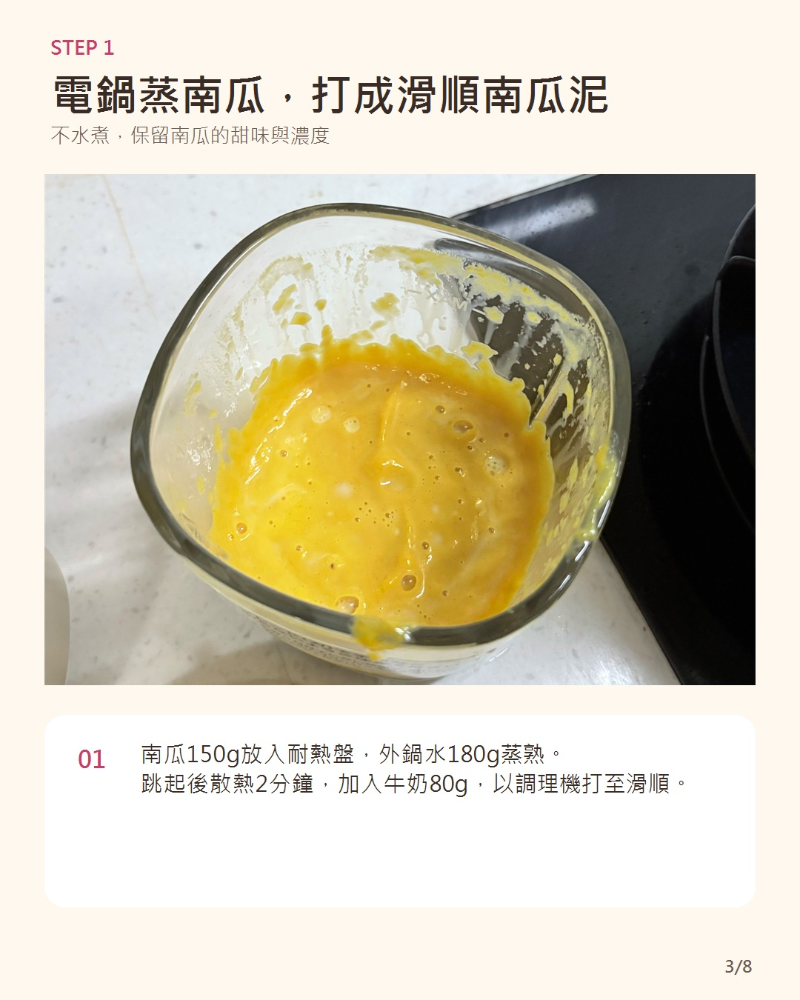
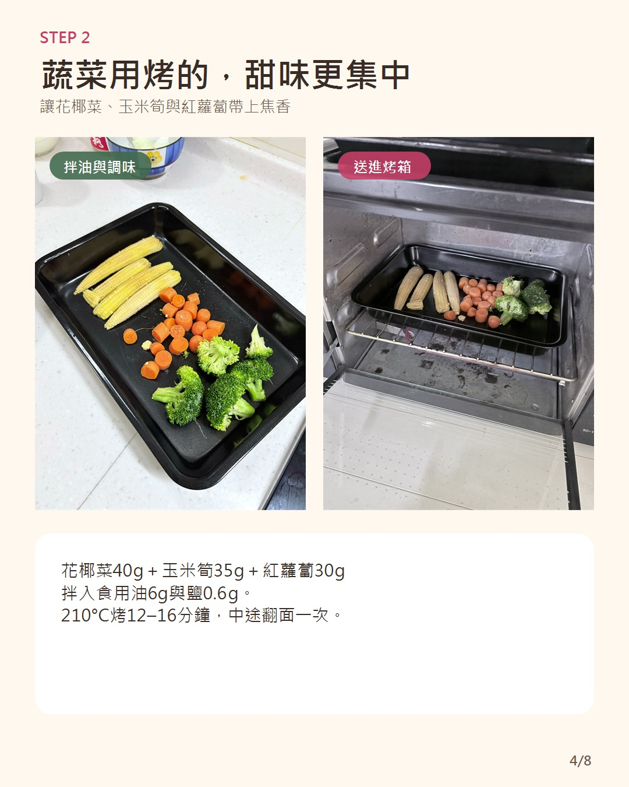
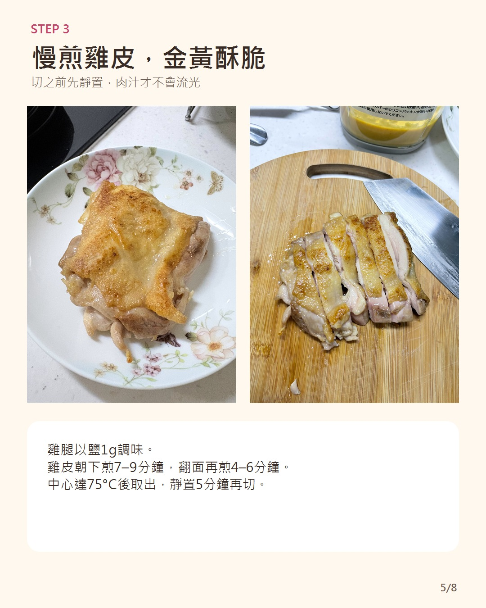
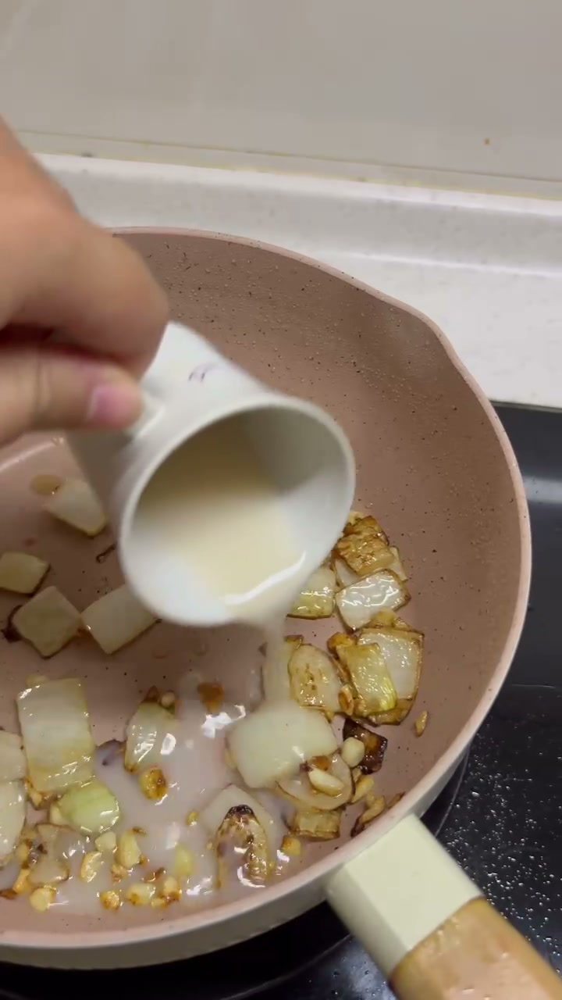
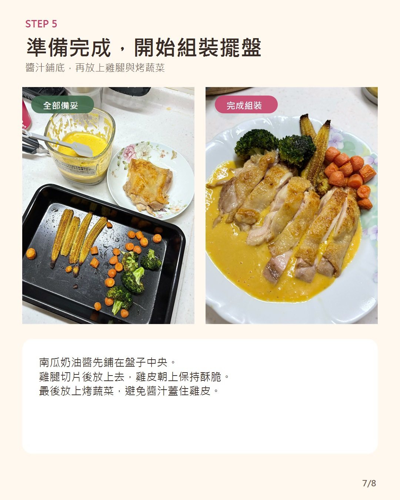
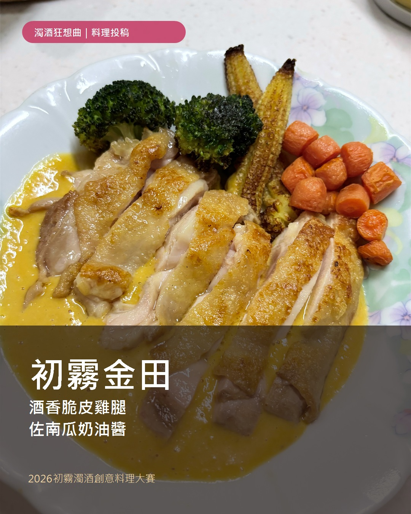
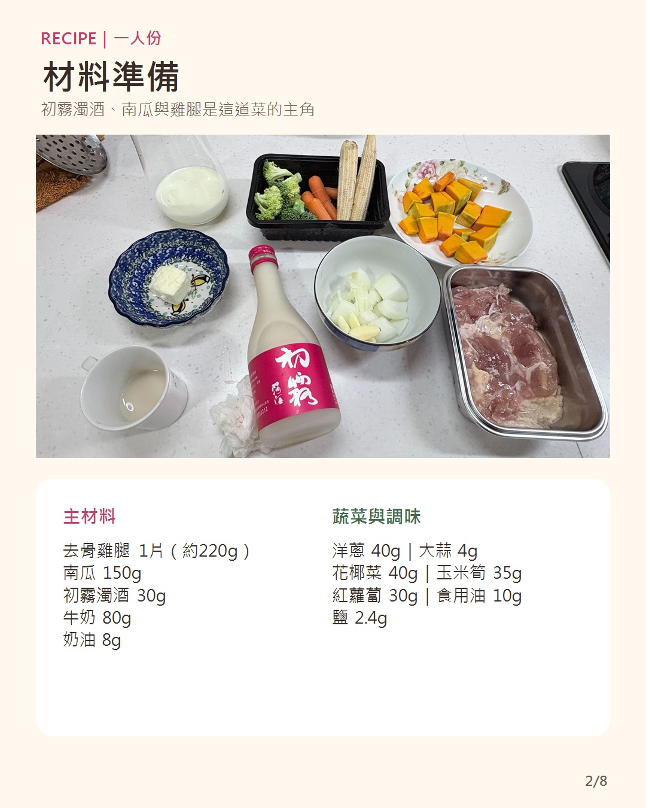
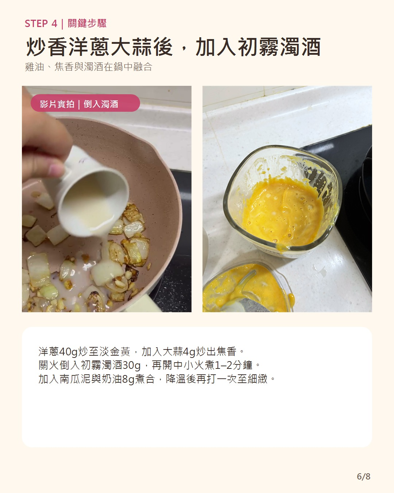
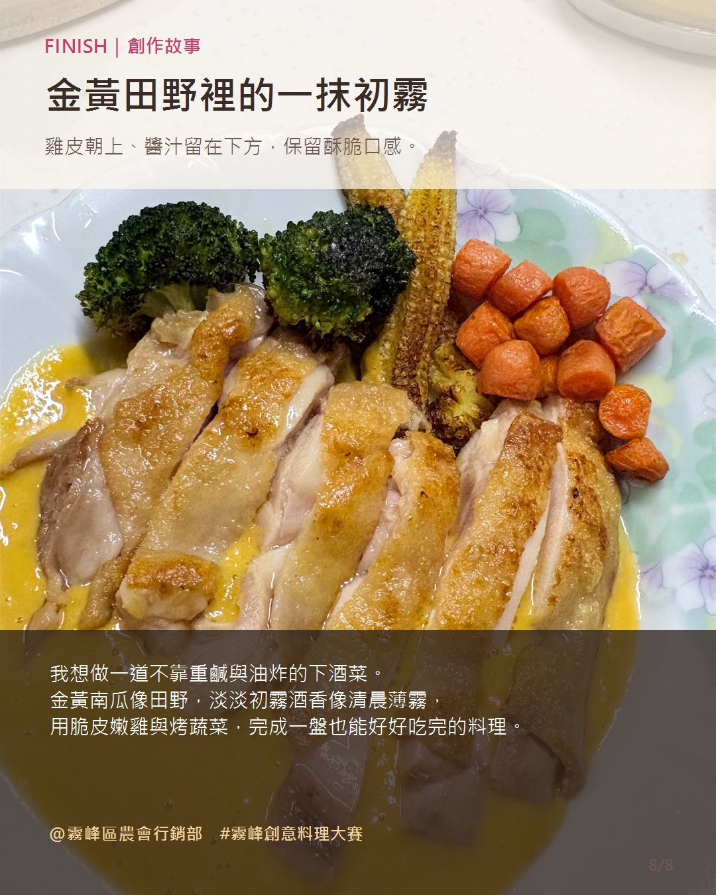

雞腿與南瓜醬
- 去骨雞腿肉
- 1片（約220g）
- 南瓜
- 150g
- 洋蔥
- 40g
- 大蒜
- 4g
- 牛奶
- 80g
- 初霧濁酒
- 30g
- 奶油
- 8g

THE STORY
說到下酒菜，常讓人想到重鹹或油炸料理。這次我想做得不一樣：它可以配酒，也是一盤有雞肉、有蔬菜，讓人好好吃完的完整料理。
雞腿皮面慢煎到金黃酥脆，裡面依然柔嫩；蒸熟的南瓜與牛奶打成細緻醬汁，再讓雞油、洋蔥與大蒜的焦香托住甜味。最關鍵的一刻，是炒香後倒入初霧濁酒，讓酒香真正進入醬汁。
金黃色南瓜像秋日田野，淡淡酒香像清晨薄霧，因此將這道料理命名為「初霧金田」。
入口順序
RECIPE · 1 SERVING
雞腿與南瓜醬
烤蔬菜與調味
電鍋
南瓜去皮去籽、切約2公分小塊。電鍋外鍋加入水180g，蒸熟後取出散熱約2分鐘。南瓜與牛奶80g一次放入調理機，打成細緻南瓜泥。

烤箱 · 210°C
花椰菜、玉米筍與紅蘿蔔拌入食用油6g、鹽0.6g，平鋪烤盤，以210°C烤12～16分鐘，中途翻面一次。

瓦斯爐 · 中小火
雞腿擦乾，以鹽1g調味並靜置10分鐘。鍋中加入食用油4g，雞皮朝下煎7～9分鐘，翻面再煎4～6分鐘；中心達75°C後取出，靜置5分鐘再切。

關鍵步驟 · 初霧濁酒
保留煎雞腿的原鍋與少量雞油，洋蔥40g以中小火炒4～5分鐘至淡金黃；加入大蒜4g再炒約30秒。
關火等待約10秒，倒入初霧濁酒30g，再重新開中小火煮1～2分鐘。
加入南瓜牛奶泥、奶油8g與鹽0.8g，小火攪拌約2分鐘。稍微降溫後，把整鍋醬汁倒回調理機再打一次，讓焦香均勻、口感更細緻。
使用密閉式調理機時，請依耐熱規格操作並保留排氣空間。

擺盤
將南瓜奶油醬鋪在中央，雞腿切片放在醬汁上，雞皮朝上；烤蔬菜錯落排在旁邊，不讓醬汁覆蓋雞皮。

35-SECOND RECAP
以八張圖快速看完材料、料理步驟、組裝擺盤與創作故事。影片使用自製原創輕音樂，字幕已直接嵌入。
SAVE & SHARE



